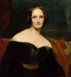

Mary Shelley: Born in London in 1797, Mary Shelley is best known for her novel Frankenstein, a foundational work of science fiction and gothic literature. Daughter of philosopher William Godwin and feminist Mary Wollstonecraft, Shelley was deeply influenced by Romantic ideals and intellectual discourse.
She began Frankenstein during a summer stay in Geneva with Percy Bysshe Shelley and Lord Byron, inspired by a ghost story challenge. The novel was published anonymously in 1818 and later under her name. Shelley continued writing novels, essays, and travelogues throughout her life, contributing significantly to 19th-century literature.
Works by Shelley
- Frankenstein (1818)
- Valperga (1823)
- The Last Man (1826)
- Lodore (1835)
- Falkner (1837)
Comments / Suggestions
We want to hear from you! If you have any comments or suggestions on things you'd like to see on the site please
let us know.